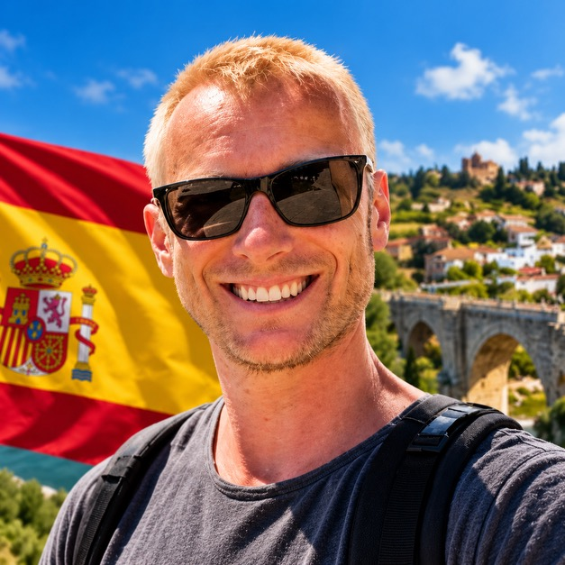

Миграционный консультант · Digital Nomad Visa · ВНЖ Испании
Оформляю ВНЖ Испании по программе Digital Nomad Visa с полным сопровождением — с самого запуска программы в феврале 2023 года.
Оформляю ВНЖ Испании по программе Digital Nomad Visa с полным сопровождением — работаю с февраля 2023 года, с самого запуска программы. Сотни одобрений и выданных карт резидента (TIE) — по запросу пришлю в личные сообщения примеры недавних одобрений.
Помимо профессионального опыта — личный: прожил в Испании 2 года, ребёнок ходил в государственный детский сад, получал полис медицинского страхования — полная интеграция в жизнь страны, не только оформление бумаг. Бесплатно подскажу по недвижимости, учёбе, школам и другим бытовым вопросам переезда. ВНЖ Испании у меня самого с 2022 года.
Работаю по договору, возможна поэтапная оплата. В случае отказа — возврат денег. Все документы проходят через аккредитованных присяжных переводчиков (traductor jurado).
Подходит вне зависимости от формы занятости — можно оформить и как наёмный сотрудник, и как самозанятый специалист, работающий удалённо на заказчиков за пределами Испании. На консультации разбираем вашу конкретную ситуацию и уточняем, какой пакет документов понадобится именно вам.
Обсуждаем ваши цели и отвечаем на вопросы — 1 день.
Переводы, апостиль, справки — до 14 дней.
Всё делается за 1 день.
Обычно занимает до 20 рабочих дней. На 21-й — автоодобрение.
Сдача отпечатков пальцев в полиции, при необходимости — с сопровождением.
Карта на 3 года, срок ожидания — 14–18 дней.
⚠️ Подавать документы нужно именно на территории Испании — для въезда подойдёт, например, туристическая шенгенская виза. После подачи можно оставаться в стране или временно выехать до этапа сдачи отпечатков.
Важно: остерегайтесь тех, кто предлагает подаваться из России и получить карту на 3 года, — это невозможно. Документы на Digital Nomad Visa подаются только на территории Испании.
Подходит вне зависимости от формы занятости — можно оформить и как наёмный сотрудник, и как самозанятый специалист, работающий удалённо на заказчиков за пределами Испании. Разбираем вашу конкретную ситуацию на консультации.
Да. В отличие от туристической шенгенской визы, с видом на жительство можно находиться в Испании весь год.
Карта выдаётся на 3 года с продлением ещё на 2. После 5 лет непрерывного проживания можно оформить ПМЖ Испании — аналог бессрочного резидентства без права голоса. Дальше — путь к гражданству Евросоюза.
Да, можно подаваться вместе с семьёй — стоимость оформления для каждого члена семьи значительно ниже.
Подавать документы нужно именно на территории Испании — для въезда подойдёт, например, туристическая шенгенская виза. После подачи можно оставаться в стране или временно выехать до этапа сдачи отпечатков пальцев.
Работаю по договору, возможна поэтапная оплата. В случае отказа — возврат денег.
Оформляли ВНЖ с Антоном? Поделитесь впечатлением — это поможет другим принять решение.
Напишите в WhatsApp +7 926 073 10 92 или на почту antonteacher@gmail.com — Антон ответит на все вопросы и расскажет всё пошагово.